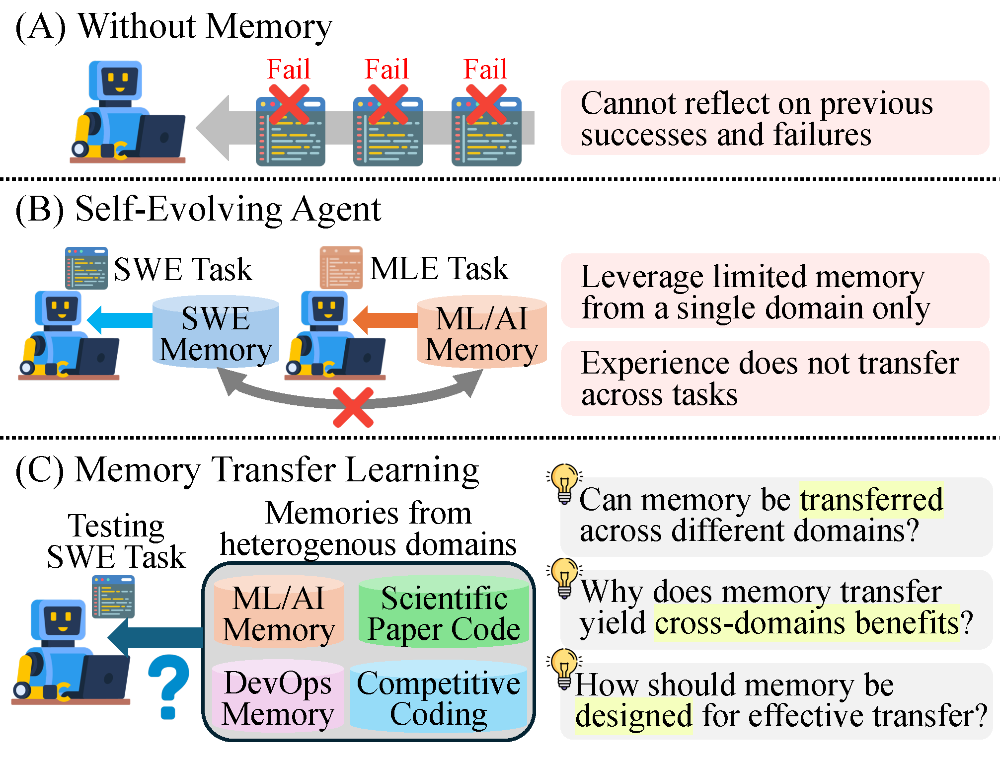
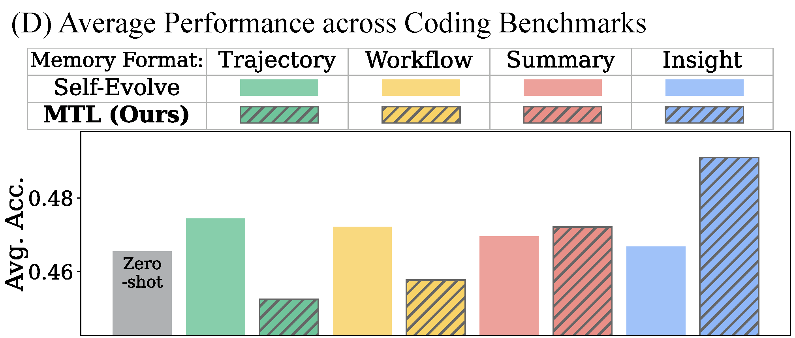
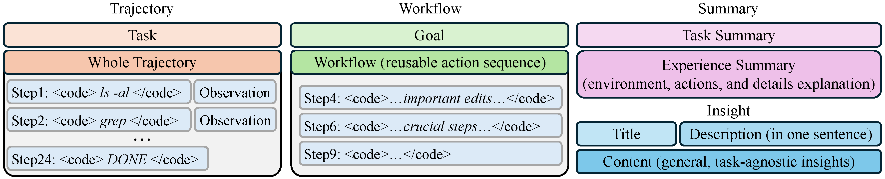
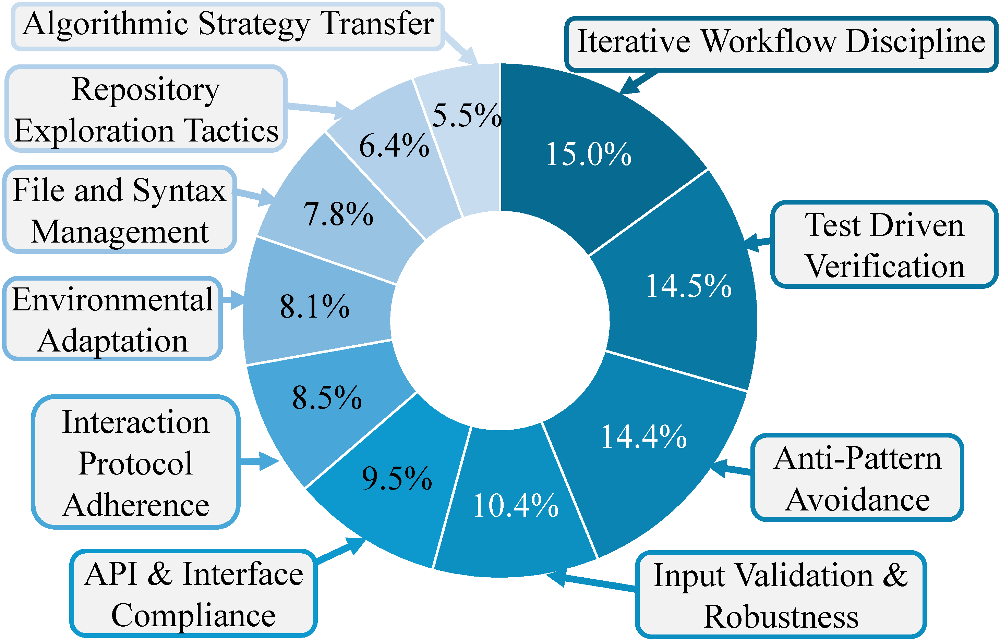
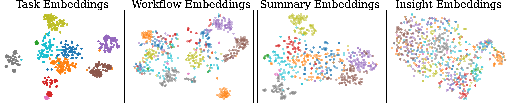
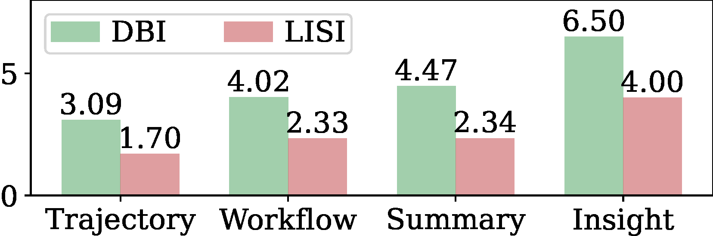
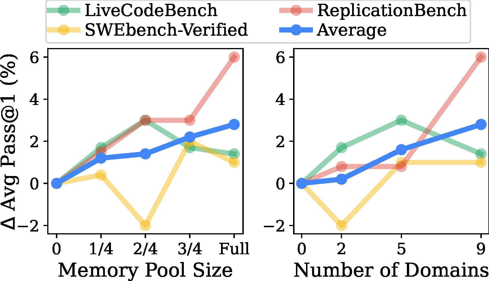

Correspondence: kangsan.kim@kaist.ac.kr
Existing self-evolving coding agents restrict memory usage to the same benchmark (B). We propose Memory Transfer Learning (C), which leverages a unified memory pool from heterogeneous domains, and show it outperforms domain-restricted approaches (D).


Does memory from heterogeneous domains improve the performance of coding agents?
Why do transferred memories yield benefits across different domains?
Which factors in memory transfer learning most influence transfer effectiveness?
Memory-based self-evolution has emerged as a promising paradigm for coding agents. However, existing approaches typically restrict memory utilization to homogeneous task domains, failing to leverage the shared infrastructural foundations, such as runtime environments and programming languages, that exist across diverse real-world coding problems. To address this limitation, we investigate Memory Transfer Learning (MTL) by harnessing a unified memory pool from heterogeneous domains. We evaluate performance across 6 coding benchmarks using four memory representations, ranging from concrete traces to abstract insights. Our experiments demonstrate that cross-domain memory improves average performance by 3.7%, primarily by transferring meta-knowledge, such as validation routines, rather than task-specific code. Importantly, we find that abstraction dictates transferability; high-level insights generalize well, whereas low-level traces often induce negative transfer due to excessive specificity. Furthermore, we show that transfer effectiveness scales with the size of the memory pool, and memory can be transferred even between different models. Our work establishes empirical design principles for expanding memory utilization beyond single-domain silos.
We construct four types of memory representations from agent trajectories, spanning a spectrum from concrete low-level traces to abstract high-level insights.

Concatenates all agent commands and execution results without reasoning sentences. Contains full task-solving detail including failed steps.
Extracts a reusable goal-oriented workflow from the trajectory — a goal statement plus a subset of meaningful actions.
Prompts an LLM to summarize the task, environment, actions, and an analysis of why the inference succeeded or failed.
Generalizable principles with title, description, and content — written to be task-agnostic for effective cross-domain transfer.
Memories from all benchmarks except the target benchmark are pooled and indexed with text embeddings. At inference time, the top-N memories are retrieved via cosine similarity and injected into the agent's system prompt.
Run the agent across all benchmarks. Use an LLM judge to assess success/failure, then generate all four memory types from each trajectory.
Merge memories from all benchmarks except the target. Index each memory using text-embedding-3-small for fast retrieval.
For each query, retrieve the top-3 most similar memories and prepend them to the coding agent's system prompt before inference.
MTL consistently improves performance across all six coding benchmarks. Insight memories achieve the best results, with gains of up to 8.3% on individual benchmarks.
Table 1. Pass@3 scores across 6 coding benchmarks under zero-shot and Memory Transfer Learning settings with four memory formats (T=Trajectory, W=Workflow, S=Summary, I=Insight). MTL with Insight achieves a +3.7% average gain over zero-shot.
| Method | LiveCodeBenchv6 | Aider-Polyglot | SWEBench-Verified | TerminalBench2 | ReplicationBench | MLGym-Bench | Avg. |
|---|---|---|---|---|---|---|---|
| GPT-5-mini | |||||||
| Zero-Shot | 0.910 | 0.470 | 0.730 | 0.315 | 0.111 | 0.667 | 0.523 |
| MTL (T) | 0.940 | 0.490 | 0.770 | 0.270 | 0.122 | 0.583 | 0.534 |
| MTL (W) | 0.920 | 0.470 | 0.770 | 0.348 | 0.111 | 0.583 | 0.538 |
| MTL (S) | 0.930 | 0.460 | 0.760 | 0.371 | 0.133 | 0.667 | 0.546 |
| MTL (I) | 0.930 | 0.470 | 0.770 | 0.360 | 0.189 | 0.750 | 0.560 |
| Δ | +2.0% | 0.0% | +4.0% | +4.5% | +7.8% | +8.3% | +3.7% |
| DeepSeek V3.2 | |||||||
| Zero-Shot | 0.930 | 0.590 | 0.530 | 0.337 | 0.267 | 0.583 | 0.542 |
| MTL (I) | 0.940 | 0.580 | 0.590 | 0.393 | 0.278 | 0.667 | 0.568 |
| Δ | +1.0% | −1.0% | +6.0% | +5.6% | +1.1% | +8.3% | +2.6% |
| Qwen3-Coder-480B-A35B-Instruct | |||||||
| Zero-Shot | 0.800 | 0.460 | 0.590 | 0.292 | 0.211 | 0.583 | 0.483 |
| MTL (I) | 0.810 | 0.480 | 0.620 | 0.326 | 0.211 | 0.583 | 0.501 |
| Δ | +1.0% | +2.0% | +3.0% | +3.4% | 0.0% | 0.0% | +1.8% |
MTL outperforms ReasoningBank (+2.9%) and AgentKB (+1.7%) with only 431 memories — far fewer than AgentKB's 5.8k memories — demonstrating both effectiveness and efficiency.
Table 2. Pass@3 comparison with self-evolving methods on three benchmarks. MTL outperforms both baselines using only 431 memories vs. AgentKB's 5,899.
| Method | #Memories | LiveCodeBenchv6 | SWEBench-Verified | ReplicationBench | Avg. |
|---|---|---|---|---|---|
| Zero-Shot | — | 0.910 | 0.730 | 0.111 | 0.584 |
| ReasoningBank | 97 | 0.920 | 0.750 | 0.133 | 0.601 |
| AgentKB | 5,899 | 0.920 | 0.720 | 0.200 | 0.613 |
| MTL (Ours) | 431 | 0.930 | 0.770 | 0.189 | 0.630 |
We collect trajectories where zero-shot fails but MTL with Insight succeeds and analyze how transferred memory contributes to success.

An Insight memory generated from LiveCodeBench provides inline test validation guidance, enabling the agent to succeed on an SWE-Bench task where zero-shot fails.
| Zero-Shot Fail | MTL with Insight Success | |
|---|---|---|
| Memory | (No memory) |
Memory Item 2 — From LiveCodeBench Title: Create quick self-contained tests using an inline Python here-doc to validate fixes Description: When making small code fixes, write a minimal test that covers the exact scenario described in the problem... Content: Set up a short battery of tests that cover the specific edge cases mentioned, run them inline with a Python here-doc to confirm the fix works before submitting... |
| Reasoning | I will modify django/db/models/aggregates.py to raise a FieldError when an Aggregate's source expression contains a window clause. This prevents creating an aggregate over a window expression... |
I will use Memory Item 2 (use an inline Python here-doc for safe, atomic edits and quick verification) to modify django/db/models/sql/query.py. The goal is to ensure that when resolving aggregates we detect if any referenced annotation is a subquery or contains a window expression... |
We visualize memory embedding spaces and quantify cluster structure across benchmarks to verify that higher abstraction correlates with stronger transferability.

Figure 6 quantifies this separation with DBI and LISI: both metrics increase monotonically from Trajectory to Insight, confirming a progressive transition toward benchmark-agnostic representations. Table 3 provides causal evidence: within Insight memories, task-agnostic ones outperform task-specific ones by +1.1% on average, showing that abstraction itself drives transfer effectiveness.

Table 3. Causal analysis: within Insight memories, task-agnostic memories consistently outperform task-specific ones, confirming that abstraction — not format — drives transfer effectiveness.
| Method | LCB | SWEB | RepliB | Avg. |
|---|---|---|---|---|
| Task-specific Insights | 0.887 | 0.617 | 0.067 | 0.523 |
| Task-agnostic Insights | 0.893 | 0.627 | 0.082 | 0.534 |
| Δ | +0.6% | +1.0% | +1.5% | +1.1% |
Trajectory memory causes the agent to blindly follow task-specific commands that fail in a new environment. Insight memory provides abstract behavioral guidance, leading to success.
| MTL with Trajectory Fail | MTL with Insight Success | |
|---|---|---|
| Memory |
From MLGym-Bench Task: Housing Price Prediction dataset + baseline... Trajectory snippet: ls -la data && nl -ba evaluate.py | sed -n '1,240p'cat <<'PY' > train_predict.py ... OneHotEncoder(..., sparse=False) ... PY→ TypeError: OneHotEncoder.__init__() got an unexpected keyword argument 'sparse' |
From MLGym-Bench Title: Inspect eval requirements, combine train+val, use robust preprocessing, and adapt to library API changes Description: Before improving a baseline model, read the repository/evaluation expectations, train on all available labeled data, apply robust preprocessing for numeric and categorical features... Content: First inspect the code that loads labels and evaluates predictions so you know the exact submission format and metrics to optimize. For the final model, combine training... |
| Reasoning | I'll start by inspecting the repository root... I'll use Memory Item 1 as a reference for the initial steps of exploring the codebase. Blindly following the trajectory resulted in an execution error. |
I will modify gradient_boosting.py to map encoded integer labels back to the original class labels before passing them to the scorer during early stopping... I'll use Memory Item 2 (inspect/evaluate and adapt code) as guidance to carefully inspect and modify the code. |
MTL can occasionally degrade performance. We identify three primary failure modes:
Structurally irrelevant but superficially similar memories act as misleading anchors, introducing incorrect assumptions.
Verification memories create a false sense of certainty, leading to self-confirming loops that miss formal success criteria.
Successful patterns transferred indiscriminately override task-specific semantics, causing procedural over-engineering.
Larger and more diverse memory pools consistently lead to better performance, as they increase the chance of retrieving genuinely useful meta-knowledge.

Since meta-knowledge is model-agnostic, memories generated by one model can benefit a different model — in both directions (stronger→weaker and weaker→stronger).
Table 4. Average Pass@1 results of cross-model, cross-domain memory transfer. Cross-model transfer consistently outperforms zero-shot, while self-generated memories (source = target) yield the best results.
| Memory Source | Target Model | LiveCodeBenchv6 | SWEBench-Verified | ReplicationBench | Avg. |
|---|---|---|---|---|---|
| Target: GPT-5-mini | |||||
| Zero-Shot | GPT-5-mini | 0.863 | 0.623 | 0.059 | 0.515 |
| DeepSeek V3.2 | GPT-5-mini | 0.890 | 0.617 | 0.048 | 0.518 |
| Qwen3-Coder | GPT-5-mini | 0.883 | 0.607 | 0.093 | 0.528 |
| GPT-5-mini | GPT-5-mini | 0.877 | 0.633 | 0.119 | 0.543 |
| Target: DeepSeek V3.2 | |||||
| Zero-Shot | DeepSeek V3.2 | 0.890 | 0.423 | 0.144 | 0.486 |
| GPT-5-mini | DeepSeek V3.2 | 0.890 | 0.450 | 0.163 | 0.501 |
| DeepSeek V3.2 | DeepSeek V3.2 | 0.893 | 0.463 | 0.178 | 0.511 |
| Target: Qwen3-Coder | |||||
| Zero-Shot | Qwen3-Coder | 0.733 | 0.347 | 0.126 | 0.402 |
| GPT-5-mini | Qwen3-Coder | 0.780 | 0.347 | 0.111 | 0.413 |
| Qwen3-Coder | Qwen3-Coder | 0.740 | 0.370 | 0.130 | 0.413 |
LLM-based reranking and task-adaptive memory rewriting did not outperform simple embedding-based retrieval, suggesting that static retrieval methods designed for RAG do not generalize to multi-step agentic settings.
Table 5. Pass@3 performance comparison across different memory retrieval methods. Simple embedding similarity outperforms both LLM reranking and adaptive rewriting, highlighting the difficulty of cross-domain retrieval in agentic settings.
| Retrieval Method | LiveCodeBenchv6 | SWEBench-Verified | ReplicationBench | Avg. |
|---|---|---|---|---|
| No Memory | 0.910 | 0.730 | 0.111 | 0.584 |
| LLM Reranking | 0.920 | 0.730 | 0.144 | 0.598 |
| Adaptive Rewriting | 0.920 | 0.760 | 0.144 | 0.608 |
| Embedding Similarity | 0.930 | 0.770 | 0.189 | 0.630 |
If you find this work useful, please cite:
TO BE ADDED